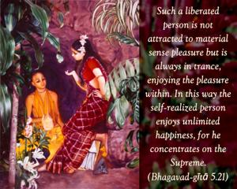
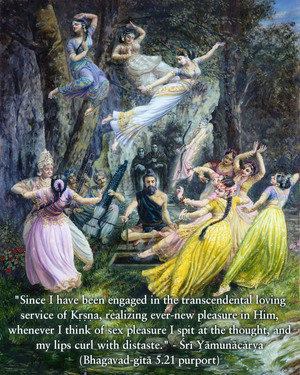
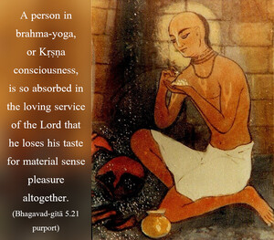
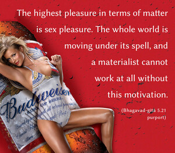

Such a liberated person is not attracted to material sense pleasure but is always in trance, enjoying the pleasure within. In this way the self-realized person enjoys unlimited happiness, for he concentrates on the Supreme.




Śrī Yāmunācārya, a great devotee in Kṛṣṇa consciousness, said:
yad-avadhi mama cetaḥ kṛṣṇa-pādāravinde
nava-nava-rasa-dhāmany udyataṁ rantum āsīt
tad-avadhi bata nārī-saṅgame smaryamāne
bhavati mukha-vikāraḥ suṣṭhu niṣṭhīvanaṁ ca
“Since I have been engaged in the transcendental loving service of Kṛṣṇa, realizing ever-new pleasure in Him, whenever I think of sex pleasure I spit at the thought, and my lips curl with distaste.” A person in brahma-yoga, or Kṛṣṇa consciousness, is so absorbed in the loving service of the Lord that he loses his taste for material sense pleasure altogether. The highest pleasure in terms of matter is sex pleasure. The whole world is moving under its spell, and a materialist cannot work at all without this motivation. But a person engaged in Kṛṣṇa consciousness can work with greater vigor without sex pleasure, which he avoids. That is the test in spiritual realization. Spiritual realization and sex pleasure go ill together. A Kṛṣṇa conscious person is not attracted to any kind of sense pleasure, due to his being a liberated soul.